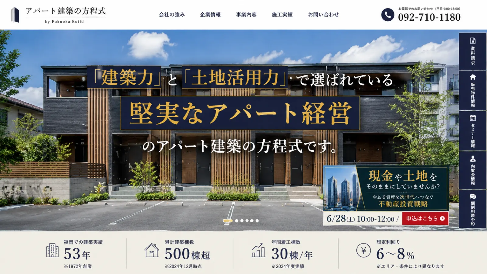
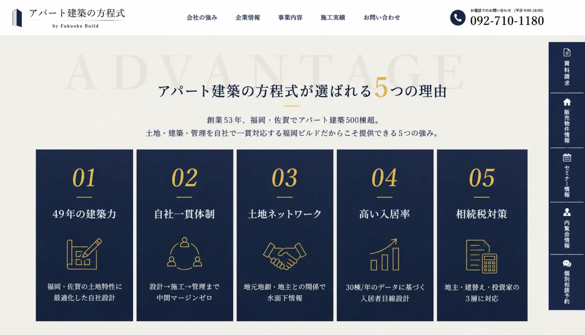
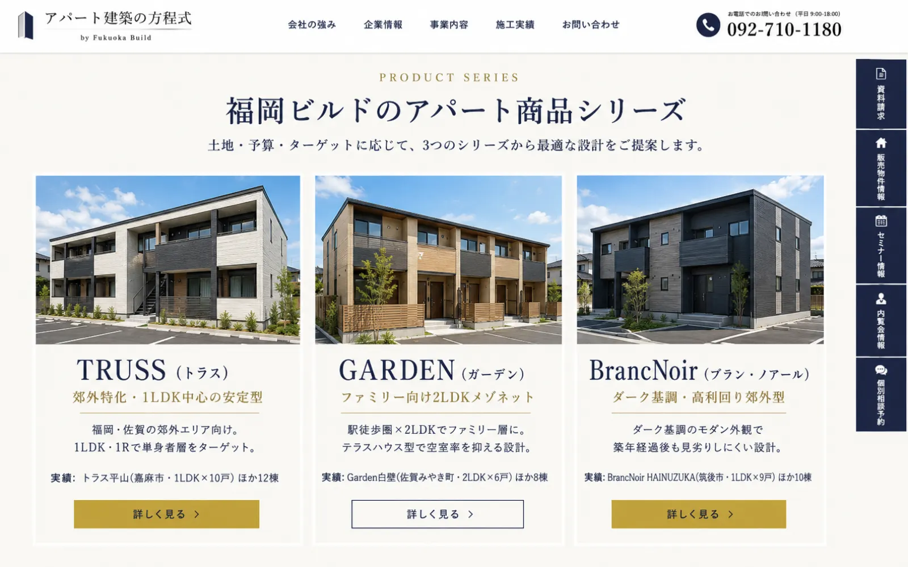
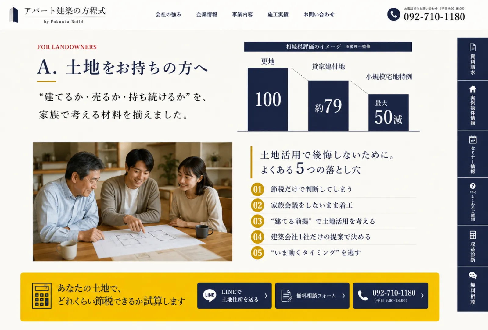
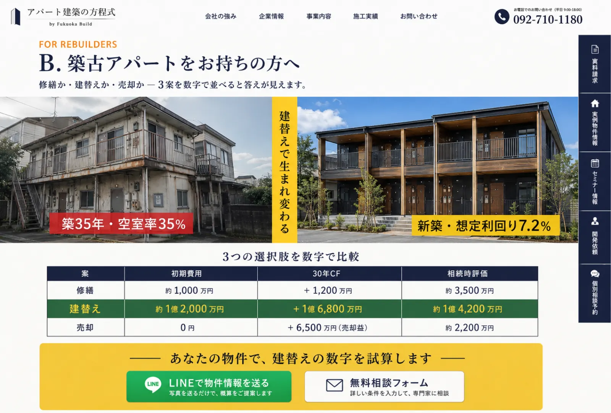
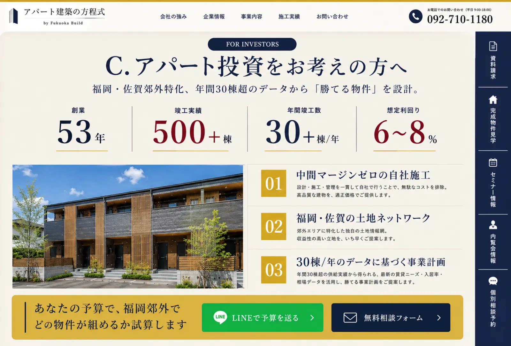
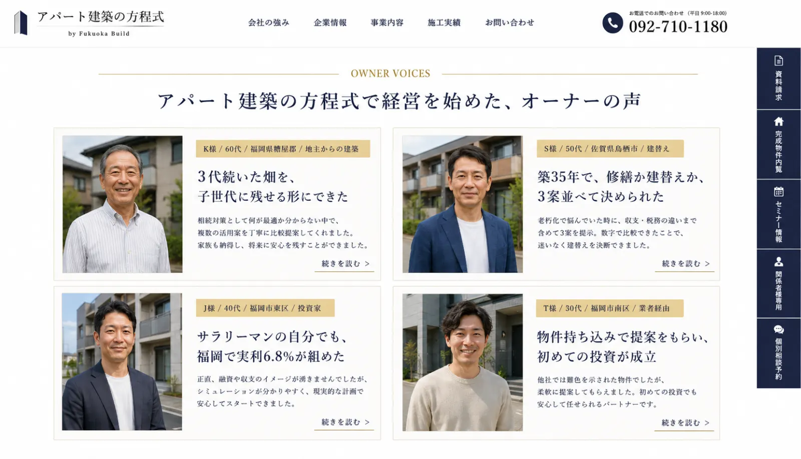
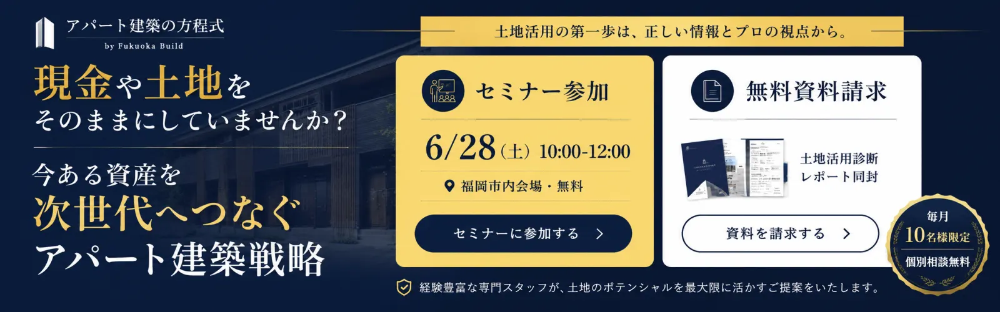
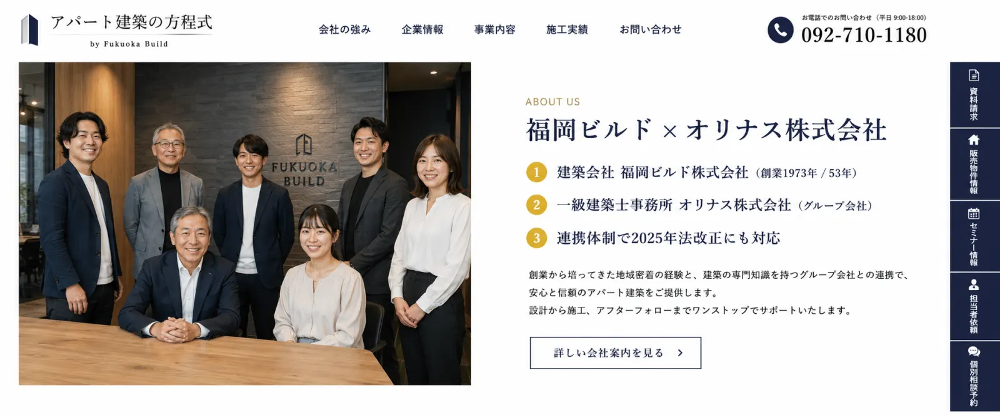
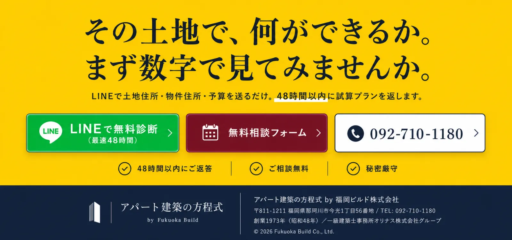

下記10セクションを縦に並べて、実際のLPとしてのスクロール感を再現しています。各セクションはChatGPT Image 2.0でアイケンジャパンの構造を学習させた上で生成しました。HTMLとして実装する際の最終デザインカンプとしてご確認ください。
※ 注記: 本モックアップは apart-x.jp（LP本体） のリニューアル提案です。f-build.co.jp（コーポレートサイト）とは別物。コンテンツは apart-x.jp 由来で統一します。
| 項目 | 画像内表記 | apart-x.jp 実態 / 修正方針 |
|---|---|---|
| 創業年数 | 53年 | 49年（apart-x.jp現サイト表記） |
| #03 セクション名 | 「商品シリーズ」 | 「360°VIEWで見られる代表的な実物件」に変更 ※ apart-x.jp に「商品シリーズ」の概念は無い。実態は360°VIEWで個別物件を見せる構造 |
| #03 実物件名 | TRUSS / GARDEN / BrancNoir ※ これはf-build.co.jp由来で混入 | ルシアスI / THE ROM 和泉 / プロンプト飯町 apart-x.jp 360°VIEW掲載の3物件 |
| 物件エリア | 嘉麻市・みやき町・筑後市 | 田川市川宮 / 筑後市和泉 / 佐賀県神埼市 |
| #07 オーナーボイス | K / S / J / T 様（4名） | S / J / T / K / M 様（5名）（apart-x.jp 実掲載順） |
| 実態価格 | 利回り6〜8%のみ | 1棟10室1LDK(35㎡) / 1室400万円〜 併記 |
📷 Phase 2 で実物件写真（ルシアスI / THE ROM 和泉 / プロンプト飯町）への差し替えを行います。









